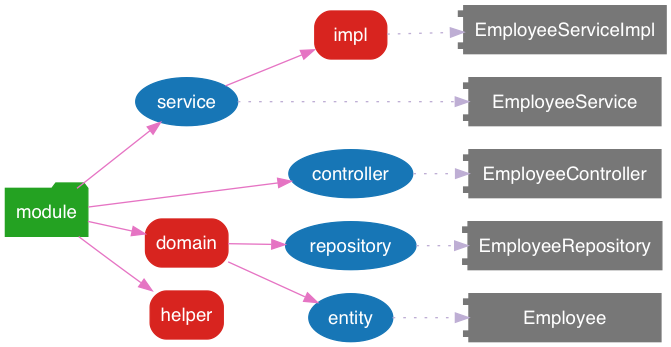

Spring 全家桶
Table of Contents
1 Spring Framework
Spring Framework 是一个开源框架，是为了解决企业应用程序开发复杂性而创建的。框 架的主要优势之一就是其分层架构，分层架构允许您选择使用哪一个组件，同时为 J2EE 应用程序开发提供集成的框架。
1.1 Spring 的特性
- 核心技术：依赖注入，事件，资源，i18n，验证，数据绑定，类型转换，SpEL，AOP
- 测试：模拟对象，TestContext 框架，Spring MVC 测试，WebTestClient。
- 数据访问：事务，DAO 支持，JDBC，ORM，编组 XML。
- Spring MVC 和 Spring WebFlux Web 框架
- 整合：远程处理，JMS，JCA，JMX，电子邮件，任务，调度，缓存。
- 语言：Kotlin，Groovy，动态语言。
1.2 Spring 的优点
- 轻量级：Spring 在大小和透明性方面绝对属于轻量级的，基础版本的 Spring 框架大 约只有 2MB。
- 控制反转(IOC)：Spring 使用控制反转技术实现了松耦合。依赖被注入到对象，而不 是创建或寻找依赖对象。
- 面向切面编程(AOP)： Spring 支持面向切面编程，同时把应用的业务逻辑与系统的服 务分离开来。
- 容器：Spring 包含并管理应用程序对象的配置及生命周期。
- MVC 框架：Spring 的 Web 框架是一个设计优良的 Web MVC 框架，很好的取代了一些 Web 框架。
- 事务管理：Spring 对下至本地业务上至全局业务(JAT)提供了统一的事务管理接口。
- 异常处理：Spring 提供一个方便的 API 将特定技术的异常(由 JDBC, Hibernate, 或 JDO 抛出)转化为一致的、Unchecked 异常。
2 Spring MVC
2.1 Spring MVC 项目包结构

3 Spring Boot
Spring Boot 是由 Pivotal 团队提供的全新框架，其设计目的是用来简化新 Spring 应用 的初始搭建以及开发过程。该框架使用了特定的方式来进行配置，从而使开发人员不再需 要定义样板化的配置。通过这种方式，Spring Boot 致力于在蓬勃发展的快速应用开发领 域(rapid application development) 成为领导者。Spring Boot 的文档见html ，源代码 托管于 GitHub 。
3.1 命令行工具
Spring Boot 命令行工具参考 cli
3.2 编译系统
3.2.1 继承父 starter
Spring Boot 项目需要继承的父级 Starter，配置如下：
<!-- Inherit defaults from Spring Boot --> <parent> <groupId>org.springframework.boot</groupId> <artifactId>spring-boot-starter-parent</artifactId> <version>2.1.0.RELEASE</version> </parent>
3.2.2 Starters
Starters 是 Spring Boot 对其依赖的再打包，官方的 Starter 都是以
spring-boot-starter 开头，并且存放在 spring-boot-starters 中
spring-boot-starter: Core starter, including auto-configuration support, logging and YAMLspring-boot-starter-activemq: Starter for JMS messaging using Apache ActiveMQspring-boot-starter-amqp: Starter for using Spring AMQP and Rabbit MQspring-boot-starter-aop: Starter for aspect-oriented programming with Spring AOP and AspectJspring-boot-starter-artemis: Starter for JMS messaging using Apache Artemisspring-boot-starter-batch: Starter for using Spring Batchspring-boot-starter-cache: Starter for using Spring Framework's caching supportspring-boot-starter-cloud-connectors: Starter for using Spring Cloud Connectors which simplifies connecting to services in cloud platforms like Cloud Foundry and Herokuspring-boot-starter-data-cassandra: Starter for using Cassandra distributed database and Spring Data Cassandraspring-boot-starter-data-cassandra-reactive: Starter for using Cassandra distributed database and Spring Data Cassandra Reactivespring-boot-starter-data-couchbase: Starter for using Couchbase document-oriented database and Spring Data Couchbasespring-boot-starter-data-couchbase-reactive: Starter for using Couchbase document-oriented database and Spring Data Couchbase Reactivespring-boot-starter-data-elasticsearch: Starter for using Elasticsearch search and analytics engine and Spring Data Elasticsearchspring-boot-starter-data-jdbc: Starter for using Spring Data JDBCspring-boot-starter-data-jpa: Starter for using Spring Data JPA with Hibernatespring-boot-starter-data-ldap: Starter for using Spring Data LDAPspring-boot-starter-data-mongodb: Starter for using MongoDB document-oriented database and Spring Data MongoDBspring-boot-starter-data-mongodb-reactive: Starter for using MongoDB document-oriented database and Spring Data MongoDB Reactivespring-boot-starter-data-neo4j: Starter for using Neo4j graph database and Spring Data Neo4jspring-boot-starter-data-redis: Starter for using Redis key-value data store with Spring Data Redis and the Lettuce clientspring-boot-starter-data-redis-reactive: Starter for using Redis key-value data store with Spring Data Redis reactive and the Lettuce clientspring-boot-starter-data-rest: Starter for exposing Spring Data repositories over REST using Spring Data RESTspring-boot-starter-data-solr: Starter for using the Apache Solr search platform with Spring Data Solrspring-boot-starter-freemarker: Starter for building MVC web applications using FreeMarker viewsspring-boot-starter-groovy-templates: Starter for building MVC web applications using Groovy Templates viewsspring-boot-starter-hateoas: Starter for building hypermedia-based RESTful web application with Spring MVC and Spring HATEOASspring-boot-starter-integration: Starter for using Spring Integrationspring-boot-starter-jdbc: Starter for using JDBC with the HikariCP connection poolspring-boot-starter-jersey: Starter for building RESTful web applications using JAX-RS and Jersey. An alternative to spring-boot-starter-webspring-boot-starter-jooq: Starter for using jOOQ to access SQL databases. An alternative to spring-boot-starter-data-jpa or spring-boot-starter-jdbcspring-boot-starter-json: Starter for reading and writing jsonspring-boot-starter-jta-atomikos: Starter for JTA transactions using Atomikosspring-boot-starter-jta-bitronix: Starter for JTA transactions using Bitronixspring-boot-starter-mail: Starter for using Java Mail and Spring Framework's email sending supportspring-boot-starter-mustache: Starter for building web applications using Mustache viewsspring-boot-starter-oauth2-client: Starter for using Spring Security's OAuth2/OpenID Connect client featuresspring-boot-starter-oauth2-resource-server: Starter for using Spring Security's OAuth2 resource server featuresspring-boot-starter-quartz: Starter for using the Quartz schedulerspring-boot-starter-security: Starter for using Spring Securityspring-boot-starter-test: Starter for testing Spring Boot applications with libraries including JUnit, Hamcrest and Mockitospring-boot-starter-thymeleaf: Starter for building MVC web applications using Thymeleaf viewsspring-boot-starter-validation: Starter for using Java Bean Validation with Hibernate Validatorspring-boot-starter-web: Starter for building web, including RESTful, applications using Spring MVC. Uses Tomcat as the default embedded containerspring-boot-starter-web-services: Starter for using Spring Web Servicesspring-boot-starter-webflux: Starter for building WebFlux applications using Spring Framework's Reactive Web supportspring-boot-starter-websocket: Starter for building WebSocket applications using Spring Framework's WebSocket support
3.3 Spring Beans 和依赖注入
Spring Framework 的相关技术在 Spring Boot 工程中都是支持的，常见的标注如下：
@ComponentScan: 查找 Beans@Autowired: 注入的构造器@Component: 组件@Repository: 仓库@Service: 服务@Controller: 控制器
下面是依赖注入的示例
package com.example.service; import org.springframework.beans.factory.annotation.Autowired; import org.springframework.stereotype.Service; @Service public class DatabaseAccountService implements AccountService { private final RiskAssessor riskAssessor; @Autowired public DatabaseAccountService(RiskAssessor riskAssessor) { this.riskAssessor = riskAssessor; } // ... }
@Service public class DatabaseAccountService implements AccountService { private final RiskAssessor riskAssessor; public DatabaseAccountService(RiskAssessor riskAssessor) { this.riskAssessor = riskAssessor; } // ... }
3.4 @SpringBootApplication 标注
Spring Framework 提供了下面的基本标注
@EnableAutoConfiguration: 开启自动配置@ComponentScan: 开启自动扫描组件@Configuration: 允许在上下文中注册其它的 Bean 或导入其它的配置类
@SpringBootApplication 相当于同时开启了上面三项配置
package com.example.myapplication; import org.springframework.boot.SpringApplication; import org.springframework.boot.autoconfigure.SpringBootApplication; @SpringBootApplication // same as @Configuration @EnableAutoConfiguration @ComponentScan public class Application { public static void main(String[] args) { SpringApplication.run(Application.class, args); } }
3.5 外部配置
Spring Boot 允许在 web 应用中读取外部配置，方便程序在不同的环境下产生不同行为。 常见的有两种配置方式，两种配置方式对比如下：
| Feature | @ConfigurationProperties |
@Value |
|---|---|---|
| Relaxed binding | Yes | No |
| Meta-data support | Yes | No |
| SpEL evaluation | No | Yes |
3.5.1 @Value 方式配置
直接使用注释的方式即可将配置的值读入 Java Bean 中，示例如下：
@Component public class MyBean { @Value("${name}") private String name; // ... }
3.5.2 @ConfigurationProperties 方式配置
该种配置方法比 @Value 更加安全
先定义配置项的 Java Bean
package com.example; import java.net.InetAddress; import java.util.ArrayList; import java.util.Collections; import java.util.List; import org.springframework.boot.context.properties.ConfigurationProperties; @ConfigurationProperties("acme") public class AcmeProperties { private boolean enabled; private InetAddress remoteAddress; private final Security security = new Security(); public boolean isEnabled() { ... } public void setEnabled(boolean enabled) { ... } public InetAddress getRemoteAddress() { ... } public void setRemoteAddress(InetAddress remoteAddress) { ... } public Security getSecurity() { ... } public static class Security { private String username; private String password; private List<String> roles = new ArrayList<>(Collections.singleton("USER")); public String getUsername() { ... } public void setUsername(String username) { ... } public String getPassword() { ... } public void setPassword(String password) { ... } public List<String> getRoles() { ... } public void setRoles(List<String> roles) { ... } } }
上述的配置类对应于配置文件中的这些配置项
acme.enabled定义一个值，默认为空acme.remote-address能通过字符串强制转换的类型acme.security.username自带 Security 对象，用户名acme.security.passwordacme.security.roles字符串集合
添加配置项，通过 @EnableConfigurationProperties 标注来扫描配置的 Java Bean
@Configuration @EnableConfigurationProperties(AcmeProperties.class) public class MyConfiguration { // ... }
并且需要添加 @Configuration 到 Java Bean 中
@Component @ConfigurationProperties(prefix="acme") public class AcmeProperties { // ... see the preceding example }
最后就可以将定义的 Java Bean 配置项注入到其它组件中
@Service public class MyService { private final AcmeProperties properties; @Autowired public MyService(AcmeProperties properties) { this.properties = properties; } //... @PostConstruct public void openConnection() { Server server = new Server(this.properties.getRemoteAddress()); // ... } }
3.6 日志
Spring Boot 提供了一个统一的日志配置，可以兼容 Java Util Logging、Log4J2 和 Logback 等日志系统作为后端。
3.6.1 日志样式
默认的输出样式如下：
2014-03-05 10:57:51.112 INFO 45469 --- [ main] org.apache.catalina.core.StandardEngine : Starting Servlet Engine: Apache Tomcat/7.0.52 2014-03-05 10:57:51.253 INFO 45469 --- [ost-startStop-1] o.a.c.c.C.[Tomcat].[localhost].[/] : Initializing Spring embedded WebApplicationContext 2014-03-05 10:57:51.253 INFO 45469 --- [ost-startStop-1] o.s.web.context.ContextLoader : Root WebApplicationContext: initialization completed in 1358 ms 2014-03-05 10:57:51.698 INFO 45469 --- [ost-startStop-1] o.s.b.c.e.ServletRegistrationBean : Mapping servlet: 'dispatcherServlet' to [/] 2014-03-05 10:57:51.702 INFO 45469 --- [ost-startStop-1] o.s.b.c.embedded.FilterRegistrationBean : Mapping filter: 'hiddenHttpMethodFilter' to: [/*]
包括以下几个部分：
- Date and Time: Millisecond precision and easily sortable.
- Log Level: ERROR, WARN, INFO, DEBUG, or TRACE.
- Process ID.
- A — separator to distinguish the start of actual log messages.
- Thread name: Enclosed in square brackets (may be truncated for console output).
- Logger name: This is usually the source class name (often abbreviated).
- The log message
3.6.2 控制台输出
控制台输出默认记录 ERROR, WARN 和 INFO 基本的日志，可以使用 --debug 开启调
试级别的输出。
java -jar myapp.jar --debug
也可以在配置文件 application.yml 中设置 debug=true
如果控制台支持彩色输出，那么还可以配置彩色输出日志
- 开启配置文件中的
spring.output.ansi.enabled选项 - 使用
%clr(%5p)可以根据日志基本来变换颜色。各级别对应的颜色： 红色 (FATAL, ERROR)，黄色（INFO），绿色（INFO, DEBUG） - 设置日期的颜色
%clr(%d{yyyy-MM-dd HH:mm:ss.SSS}){yellow}，默认支持以下几 种色彩： blue cyan faint green magenta red yellow
3.6.3 文件输出
文件输出通过 logging.file 和 logging.path 来控制
| logging.file | logging.path | Example | Description |
|---|---|---|---|
| (none) | (none) | 仅开启控制台输出 | |
| Specific file | (none) | my.log | 输出到文件，文件路径是当前文件夹的相对路径 |
| (none) | Specific directory | /var/log | 输出到文件，文件路径可以是相对路径或绝对路径 |
logging.file.max-size设置文件的最大存储大小logging.file.max-history设置最大的历史文件数量
3.6.4 日志级别
日志级别可以通过 logging.level.<logger-name>=<level> 来设置，其中
logging.level.root 是设置默认级别
logging.level.root=WARN logging.level.org.springframework.web=DEBUG logging.level.org.hibernate=ERROR
3.6.5 日志分组
日志基本可以通过分组来设置，例如
logging.group.tomcat=org.apache.catalina, org.apache.coyote, org.apache.tomcat
Spring Boot 的默认分组有下面几个：
- web :
org.springframework.core.codec, org.springframework.http, org.springframework.web - sql :
org.springframework.jdbc.core, org.hibernate.SQL
3.7 配置数据库
3.7.1 MySQL
application.yml 配置文件中添加用户名、密码等相关信息
spring: jpa: database-platform: org.hibernate.dialect.MySQL5Dialect datasource: platform: mysql username: username password: password url: jdbc:mysql://localhost:3306/database?useUnicode=true&characterEncoding=utf-8&useSSL=false driver-class-name: com.mysql.jdbc.Driver
pom.xml 文件中添加 MySQL 依赖
<dependency> <groupId>mysql</groupId> <artifactId>mysql-connector-java</artifactId> <version>5.1.38</version> </dependency>
3.7.2 PostgreSQL
application.yml 配置文件中添加用户名、密码等相关信息
spring: jpa: database-platform: org.hibernate.dialect.PostgreSQL9Dialect datasource: platform: postgres username: username password: password url: jdbc:postgresql://localhost:5432/database driver-class-name: org.postgresql.Driver
pom.xml 文件中添加 PostgreSQL 依赖
<dependency> <groupId>org.postgresql</groupId> <artifactId>postgresql</artifactId> <version>42.2.5</version> </dependency>
3.7.3 Oracle
application.yml 配置文件中添加用户名、密码等相关信息
spring: ### oracle 10g ### jpa: database-platform: org.hibernate.dialect.Oracle10gDialect datasource: username: username password: password url: jdbc:oracle:thin:@//localhost:1521/database driver-class-name: oracle.jdbc.OracleDriver
pom.xml 文件中添加 PostgreSQL 依赖
<dependency> <groupId>com.oracle</groupId> <artifactId>ojdbc6</artifactId> <version>11.2.0.4.0</version> <scope>provided</scope> </dependency>
Oracle 的驱动是收费的，需要手工安装，默认在 $ORACLE_HOME/jdbc/lib/ 文件夹中，
文档中对 ojdbc 描述如下：
Driver Versions
---------------
These are the driver versions in the 10.2.0.1.0 release:
- JDBC Thin Driver 10.2.0.1.0
100% Java client-side JDBC driver for use in client applications,
middle-tier servers and applets.
- JDBC OCI Driver 10.2.0.1.0
Client-side JDBC driver for use on a machine where OCI 10.2.0.1.0
is installed.
- JDBC Thin Server-side Driver 10.2.0.1.0
JDBC driver for use in Java program in the database to access
remote Oracle databases.
- JDBC Server-side Internal Driver 10.2.0.1.0
Server-side JDBC driver for use by Java Stored procedures. This
driver used to be called the "JDBC Kprb Driver".
For complete documentation, please refer to "JDBC Developer's Guide
and Reference".
Contents Of This Release
------------------------
For all platforms:
[ORACLE_HOME]/jdbc/lib contains:
- classes12.jar
Classes for use with JDK 1.2 and JDK 1.3. It contains the
JDBC driver classes, except classes for NLS support in Oracle
Object and Collection types.
- classes12_g.jar
Same as classes12.jar, except that classes were compiled with
"javac -g" and contain some tracing information.
- classes12dms.jar
Same as classes12.jar, except that it contains additional code
to support Oracle Dynamic Monitoring Service. Can only be used
when dms.jar is in the classpath. dms.jar is provided as part of
recent Oracle Application Server releases.
- classes12dms_g.jar
Same as classes12dms.jar except that classes were compiled with
"javac -g" and contain some tracing information.
- ojdbc14.jar
Classes for use with JDK 1.4 and 5.0. It contains the JDBC driver
classes, except classes for NLS support in Oracle Object and
Collection types.
- ojdbc14_g.jar
Same as ojdbc14.jar, except that classes were compiled with
"javac -g" and contain some tracing information.
- ojdbc14dms.jar
Same as ojdbc14.jar, except that it contains additional code
to support Oracle Dynamic Monitoring Service. Can only be used
when dms.jar is in the classpath. dms.jar is provided as part of
recent Oracle Application Server releases.
- ojdbc14dms_g.jar
Same as ojdbc14dms.jar except that classes were compiled with
"javac -g" and contain some tracing information.
[ORACLE_HOME]/jdbc/doc/javadoc.tar contains the JDBC Javadoc
for the public API of the public classes of Oracle JDBC.
[ORACLE_HOME]/jdbc/demo/demo.tar contains sample JDBC programs.
[ORACLE_HOME]/jlib/orai18n.jar
NLS classes for use with JDK 1.2, 1.3, 1.4, and 5.0. It contains
classes for NLS support in Oracle Object and Collection types.
This jar file replaces the old nls_charset jar/zip files. In
Oracle 10g R1 it was duplicated in [ORACLE_HOME]/jdbc/lib. We
have removed the duplicate copy and you should now get it from
its proper location.
安装适配你项目的 jar 文件即可
mvn install:install-file -Dpackaging=jar \ -DgroupId=com.oracle -DartifactId=ojdbc6 -Dversion=11.2.0.4.0 \ -Dfile=<path-to-jar>
3.7.4 Tomcat 连接池配置
如果你在项目中使用 Tomcat 连接池作为数据库连接，可能还需要设置的相关参数
# Number of ms to wait before throwing an exception if no connection is available. spring.datasource.tomcat.max-wait=10000 # Maximum number of active connections that can be allocated from this pool at the same time. spring.datasource.tomcat.max-active=50 # Validate the connection before borrowing it from the pool. spring.datasource.tomcat.test-on-borrow=true
3.8 开发工具
Spring Boot 的提供了开发工具套件，可以实现自动加载，仅仅需要在 pom.xml 文件中
加入下面依赖即可自动添加
<dependencies> <dependency> <groupId>org.springframework.boot</groupId> <artifactId>spring-boot-devtools</artifactId> <optional>true</optional> </dependency> </dependencies>
4 Spring Data JPA
JPA(Java Persistence API)意即 Java 持久化 API，是 Sun 官方在 JDK5.0 后提出的 Java 持久化规范。JPA 的出现主要是为了简化持久层开发以及整合 ORM 技术，结束 Hibernate、TopLink、JDO 等 ORM 框架各自为营的局面。JPA 是在吸收现有 ORM 框架的 基础上发展而来，易于使用，伸缩性强。总的来说，JPA 包括以下 3 方面的技术：
- ORM 映射元数据： 支持 XML 和注解两种元数据的形式，元数据描述对象和表之间的映射 关系
- API： 操作实体对象来执行 CRUD 操作
- 查询语言： 通过面向对象而非面向数据库的查询语言（JPQL）查询数据，避免程序的 SQL 语句紧密耦合
Spring Data JPA 是 Spring Data 家族的一部分，可以轻松实现基于 JPA 的存储库。 此模 块处理对基于 JPA 的数据访问层的增强支持。 它使构建使用数据访问技术的 Spring 驱动应 用程序变得更加容易。其代码托管于 GitHub ， 文档见 reference 。
5 Spring Cloud
Spring Cloud 是一系列框架的有序集合。它利用 Spring Boot 的开发便利性巧妙地简化了 分布式系统基础设施的开发，如服务发现注册、配置中心、消息总线、负载均衡、断路器、 数据监控等，都可以用 Spring Boot 的开发风格做到一键启动和部署。Spring Cloud 并没 有重复制造轮子，它只是将目前各家公司开发的比较成熟、经得起实际考验的服务框架组 合起来，通过 Spring Boot 风格进行再封装屏蔽掉了复杂的配置和实现原理，最终给开发 者留出了一套简单易懂、易部署和易维护的分布式系统开发工具包。
5.1 Spring Cloud Config
将配置信息中央化保存, 配置 Spring Cloud Bus 可以实现动态修改配置文件
5.1.1 新建配置文件
- 配置文件命名方式为: {appname}-{profile}.yml
- appname 是微服务的名称
- profile 是不同的环境，建议用：```dev``` 表示开发环境， ```prod``` 表示线 上运行环境
- 对应请求的 URI 有以下几种格式
- ```/{application}/{profile}[/{label}]```
- ```/{application}-{profile}.yml```
- ```/{label}/{application}-{profile}.yml```
- ```/{application}-{profile}.properties```
- ```/{label}/{application}-{profile}.properties```
5.1.2 中心配置服务器
<project> <dependencies> <dependency> <groupId>org.springframework.cloud</groupId> <artifactId>spring-cloud-config-server</artifactId> </dependency> <dependency> <groupId>org.springframework.boot</groupId> <artifactId>spring-boot-starter-test</artifactId> <scope>test</scope> </dependency> </dependencies> <dependencyManagement> <dependencies> <dependency> <groupId>org.springframework.cloud</groupId> <artifactId>spring-cloud-dependencies</artifactId> <version>Greenwich.SR2</version> <type>pom</type> <scope>import</scope> </dependency> </dependencies> </dependencyManagement> </project>
中心服务器需要添加 @EnableConfigServer 来启用配置服务器
import org.springframework.boot.SpringApplication; import org.springframework.boot.autoconfigure.SpringBootApplication; import org.springframework.cloud.config.server.EnableConfigServer; @SpringBootApplication @EnableConfigServer public class Application { public static void main(String[] args) { SpringApplication.run(Application.class, args); } }
在中心配置服务器中的 application.yml 中添加相应的配置
spring: profiles: active: default cloud: config: server: git: uri: http://github.com/avic/configfiles.git searchPaths: - path1 - path2 username: user password: pass
5.1.3 客户端使用自动配置项
首先修改 pom.xml, application.yml 和 bootstrap.yml 这三项配置文件
<!-- pom.xml --> <project> <!-- 1. 添加下面四个依赖项 --> <dependencies> <dependency> <groupId>org.springframework.cloud</groupId> <artifactId>spring-cloud-starter-config</artifactId> </dependency> <dependency> <groupId>org.springframework.boot</groupId> <artifactId>spring-boot-starter-actuator</artifactId> </dependency> <dependency> <groupId>org.springframework.boot</groupId> <artifactId>spring-boot-starter-web</artifactId> </dependency> <dependency> <groupId>org.springframework.boot</groupId> <artifactId>spring-boot-starter-test</artifactId> <scope>test</scope> </dependency> </dependencies> <!-- 2. 设置依赖管理 --> <dependencyManagement> <dependencies> <dependency> <groupId>org.springframework.cloud</groupId> <artifactId>spring-cloud-dependencies</artifactId> <!-- 这个 version 需要和你使用的 spring boot 版本适配，否则应用起不来 --> <version>Greenwich.SR2</version> <!-- 我的项目中 spring boot 版本是 2.1.0.RELEASE, 所以 cloud 的版本使用 Greenwich --> <type>pom</type> <scope>import</scope> </dependency> </dependencies> </dependencyManagement> </project>
# src/main/resources/application.yml management: endpoints: web: exposure: include: '*'
# src/main/resources/bootstrap.yml spring: application: name: appname # 这里写你项目的名称 profiles: active: dev # 这里配置你需要的 profile cloud: config: uri: http://192.168.0.231/peizhi
在系统启动的主类中添加 ```@RefreshScope``` 注解
import org.springframework.boot.autoconfigure.SpringBootApplication; import org.springframework.cloud.context.config.annotation.RefreshScope; @SpringBootApplication @RefreshScope public class Application { public static void main(String[] args) { SpringApplication.run(Application.class, args); } }